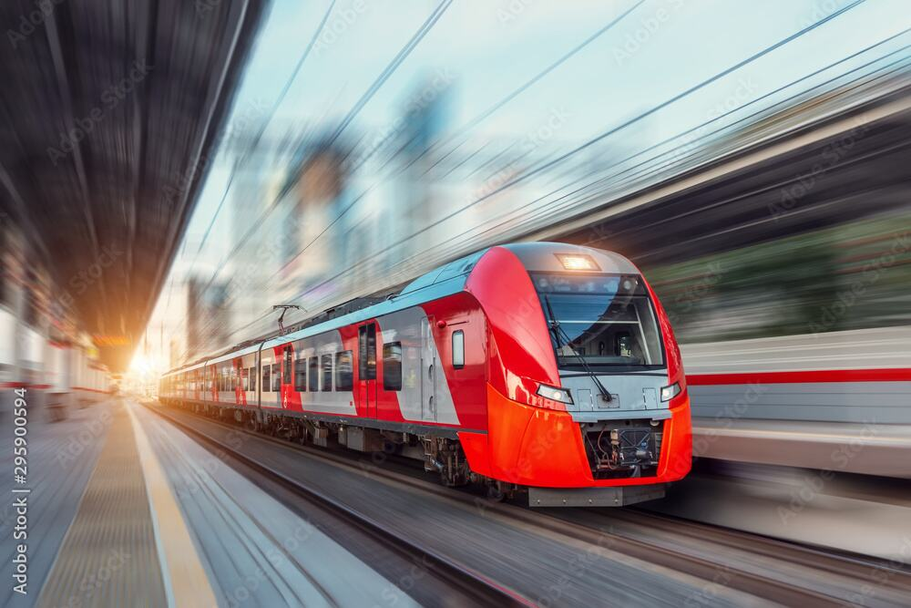
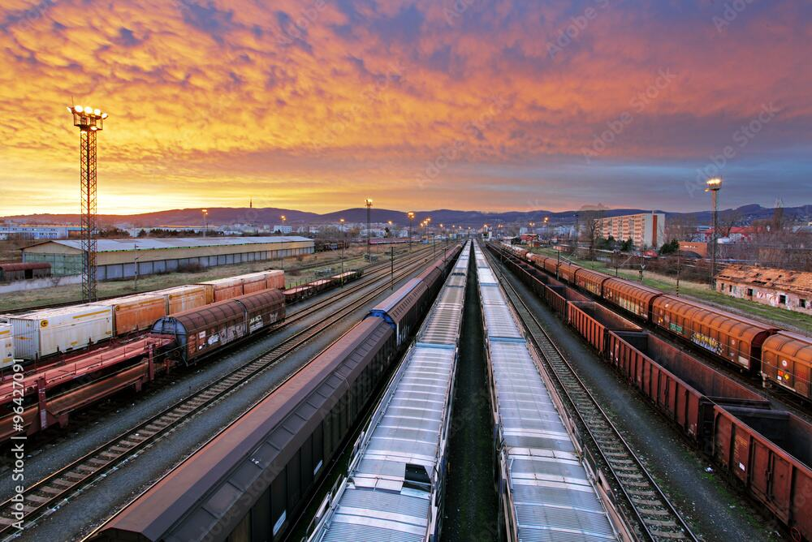
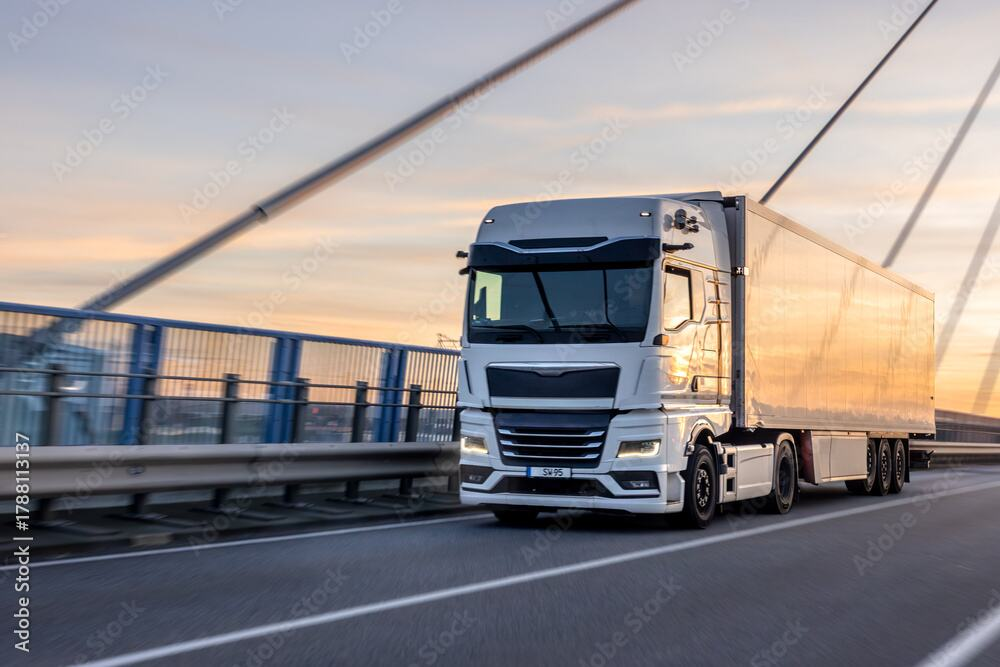

Aries Group
2003
Founded in Constanța, Romania’s largest port city.
One partner across the entire transport chain.
Established in 2003, Aries Group is among Romania’s leading transport and logistics providers, headquartered in Constanța and operating across the Black Sea and Danube region.
We integrate maritime, rail and road transport capabilities to create flexible supply chain solutions tailored to the specific needs of each customer.
With specialized divisions, each focused on a specific area of expertise, we reduce operational friction and give our customers greater predictability and operational control, regardless of project complexity.
Annual volumes and market shares across the three companies of Aries Group.
We handle ships which load or discharge 25% of all agricultural products exported and imported via Romanian ports, including grain, oil seeds, meals, edible oils and sugar.
Tramp and break-bulk liner vessels, with parceling services between the Black Sea and North/Central America, Middle East, Indian Subcontinent and Far East, plus cargo supervision, port captain and customs services.
Crude oil, petroleum products and liquid chemicals, on behalf of Romania’s largest petroleum company and other major traders.
Intra-group expertise in ship agency, bunkering, logistics, procurement, storage, chandling, supply and transport to meet the requirements of shipowners and operators.
Imports, exports and transit cargoes, on behalf of Romania’s largest fertilizer producer and major local and international traders.
Channel transit formalities, pilotage and towage coordination, customs transit procedures and brokerage for cargo transported via inland waterways.
Our maritime division handles a wide variety of vessel types and cargoes: agricultural commodities, fertilizers, petroleum and liquid products, steel products, project cargo, Ro-Ro vessels, cruise ships and military vessels.
Beyond traditional ship agency, we provide cargo operation supervision, port captain services, customs formalities and operational consultancy, to the highest standards of efficiency and compliance.
Specialized rail transport across Romania, connecting inland loading points with ports and other destinations.
We secure wagon availability so cargo reaches terminal operations and vessel loading on schedule.
Loading, dispatch, arrival and unloading, with continuous operational follow-up at every stage.
Train movements planned around terminal availability and vessel loading schedules.

Aries Interlink coordinates end-to-end rail operations, securing wagon capacity, planning train movements and keeping clients, railway operators, infrastructure managers and loading points in constant contact.
During the grain harvest, limited rail capacity and tight vessel loading schedules call for precise coordination and fast decisions. We keep cargo moving, minimize delays and support export commitments.
Bulk grain goes straight into containers from ships, barges, trucks or trains, inside the Black Sea’s largest container terminal. Its location in the port’s free zone keeps every export and transit service in one place.

Complete cargo handling across Romanian ports for bulk, general, unitized and project cargo, with a strong focus on speed and efficiency.
Collection and delivery between the hinterland and Romanian ports: steel products, general cargo, grains and project cargo.
Short and long-term storage in port and inland, tailored to the requirements of each project.
Barge transport along the Danube, with transshipment between seagoing vessels and barges and intermodal options along the corridor.
Forwarding and logistics solutions for conventional and containerized cargo, built around each shipment.
A specialized customs team manages clearance procedures, cutting processing time and keeping the process transparent.

Aries Logistics manages cargo flows across Romanian ports and the hinterland, connecting port operations with transport, storage and customs support.
We handle bulk, general, unit and project cargo, with a complete range of logistics capabilities under one roof.